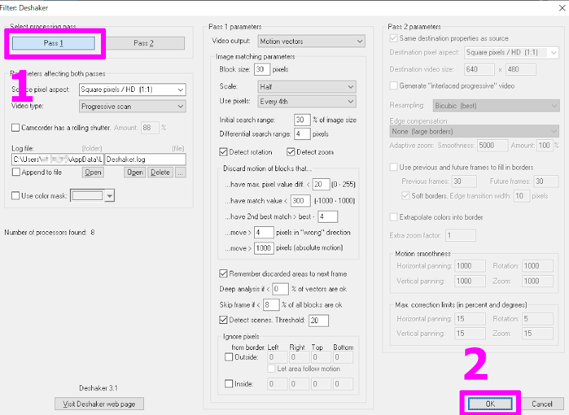
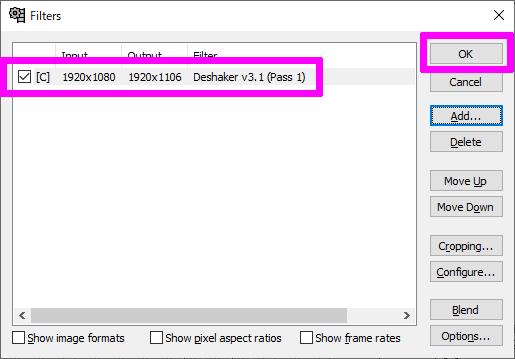

以前は、手ブレを補正するために YouTube のスタビライズを使っていたのですがその機能が無くなっていました。
高機能なカメラだと 本体やレンズに 手ブレ補正機能が備わっているのですが、私のカメラは廉価版なので そのような機能は備わっていません。
つまり、手ブレ放題な動画が撮影できてしまいます。困ったな。
そんな私に朗報です。
VirtualDub のプラグイン【Deshaker】で手ブレ補正が出来るとのことなので、早速挑戦してみました。
必要なもの
動画編集フリーソフト「VirtualDub」
http://virtualdub.sourceforge.net/
ダウンロード方法
64ビット OS なら「VirtualDub-1.10.4-AMD64」、それ以外なら「VirtualDub-1.10.4」をダウンロードします。
VirtualDub の プラグイン「Deshaker」
「Deshaker」手ブレ補正が出来るようにする。
http://www.guthspot.se/video/deshaker.htm
ダウンロード方法
こっちも同じで 64ビット OS なら「Deshaker 64-bit」、それ以外なら「Deshaker 32-bit」をダウンロードします。
VirtualDub の プラグイン「FFInputDriver」
「FFInputDriver」MKV や MP4、FLV その他色々な拡張子の動画を読み込めるようにする。
https://codecpack.co/download/FFInputDriver.html
ダウンロード方法
「FFMpeg Input Plugin 1.9.0.5 | FFMpeg Input Plugin Standalone」をダウンロードします。
コーデック「x264vfw」
「x264vfw」H.264 形式で動画を圧縮する時に使う。
https://sourceforge.net/projects/x264vfw/files/
「x264vfw_full_44_2851bm_44825」をダウンロードします。
手ブレ補正が出来るように準備
必要なものが揃ったら VirtualDub に プラグインを入れて、手ブレ補正が出来るようにします。
VirtualDub を解凍する
VirtualDub を適当なところに解凍します。
Deshaker を プラグインフォルダに入れる
Deshaker を解凍して、「plugins64」フォルダに入れます。
FFInputDriver を プラグインフォルダに入れる
FFInputDriver を解凍して、「plugins64」フォルダに入れます。
x264vfw をインストールする
x264vfw を PC にインストールします。
途中で、32ビット版か 64ビット版のどちらを入れるか選べるので、必要な方だけをチェックします。
これで準備完了です。
手ブレ補正の手順
「File」の「Open video file」で対象の動画を開きます。また、ドラッグ・アンド・ドロップ でも開けます。
次にメニュー「Video」の「Filters」を選択します。
Filters ダイアログの「Add」ボタンを押して、
「Deshaker v3.1」を選択して、「OK」ボタンを押します。

Deshaker の設定画面 が表示されるので、「Pass 1」ボタンを押してから、「OK」ボタンを押します。

Filters ダイアログ に「Deshaker v3.1 (Pass 1)」が追加されている事を確認して、「OK」ボタンを押します。

ここまで出来たら、メイン画面の左下の左から3つ目の「Output playback」ボタンを押して、Pass 1 を一次出力します。
結構時間が掛かるのでので、気長に待ちます。
一次出力 が完了したら、再度メニュー「Video」の「Filters」を選択し、Filters ダイアログ を開きます。
そして、Deshaker をダブルクリックして Deshaker の設定画面 を開きます。
Deshaker の設定画面 が表示されたら、「Pass 2」ボタンを押して「OK」ボタンを押します。
Filters ダイアログ の「Deshaker v3.1 (Pass 1)」が「Deshaker v3.1 (Pass 2)」に変わっている事を確認して、「OK」ボタンを押します。
これで手ブレ補正完了です。
出力時の動画圧縮を「H.264」に変更
最後に、出力時の動画圧縮を「H.264」に変更します。
メニュー「Video」の「Compression」を選択します。
「x264vfw - H.264 / MPEG-4 AVC codec」を選択して「OK」ボタンを押します。
これでOK
手ブレ補正済み動画を出力
メニュー「File」の「Save as AVI」を選択します。

あとは、適当な保存先とファイル名を指定して、保存したら手ブレ補正済み動画の出来上がりです。
もし Windows 標準のプレイヤーで見れない場合は、「VLC メディアプレイヤー」などで再生してみて下さい。
手ブレ補正した動画に黒枠が出る場合
手ブレ補正した動画に黒枠が出る場合があります。
その場合は「AviUtl」でトリミングしてあげるとキレイになります。
設定の「クリッピング ＆ リサイズの設定」を選択して、
手ブレ補正の度合いにもよりますが、上下左右を10ずつ減らしてみて下さい。
おわりに
最後の AviUtl 編 は余談になってしまいましたが、いい感じに手ブレ補正が出来ました。
VirtualDub で出力した 動画のサイズが 7GB に膨れ上がっていたので、YouTube に上げないなら AviUtl で再エンコードした方がいいですね。